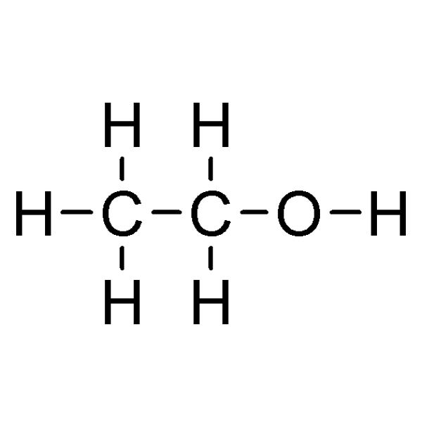
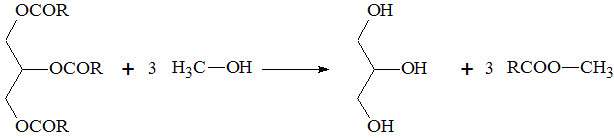

Biocombustiveis
Biocombustíveis são derivados de biomassa renovável que podem substituir, parcial ou totalmente, combustíveis derivados de petróleo e gás natural em motores a combustão ou em outro tipo de geração de energia.
Os dois principais biocombustíveis líquidos usados no Brasil são o etanol obtido a partir de cana-de-açúcar e, em escala crescente, o biodiesel, que é produzido a partir de óleos vegetais ou de gorduras animais e adicionado ao diesel de petróleo em proporções variáveis.
Cerca de 45% da energia e 18% dos combustíveis consumidos no Brasil já são renováveis. No resto do mundo, 86% da energia vêm de fontes energéticas não renováveis. Pioneiro mundial no uso de biocombustíveis, o Brasil alcançou uma posição almejada por muitos países que buscam desenvolver fontes renováveis de energia como alternativas estratégicas ao petróleo.
Os principais biocombustíveis é o etanol (feito de cana-de-açúcar) e o biodiesel.
O etanol:
O etanol é representado pela fórmula C2H6O, ou, de forma mais detalhada, CH3CH2OH. Isso significa que o composto é formado por dois átomos de carbono (C) ligados à cinco átomos de hidrogênio (H) e a um átomo de oxigênio (O) ligado a outro hidrogênio. A presença do grupo OH, chamado de hidroxila, em sua composição, faz com que o etanol se torne uma substância polar, ou seja, que possua pólos eletrônicos distintos em sua cadeia, algo possível graças à presença do oxigênio. Por causa dessa característica, o álcool se mistura facilmente com a água e outros líquidos que também são polares.
Dentre os compostos químicos, o etanol é considerado um composto orgânico, que são aqueles formados por cadeias de carbono. Isso faz com que ele seja encontrado mais facilmente em estado líquido ou gasoso, ao contrário dos compostos inorgânicos, como os minerais, que em seu estado natural costumam ser sólidos.

Biodiesel
O biodiesel é um biocombustível líquido considerado uma fonte de energia renovável, que substitui o uso de combustíveis fósseis.
É produzido a partir de fontes vegetais ou animais. Por isso, é um produto natural e biodegradável com baixo teor poluente. Representa uma alternativa para substituir os combustíveis derivados do petróleo, os quais são poluentes.
A produção de biodiesel é realizada mediante a mistura de óleo vegetal ou gordura animal em metanol ou etanol, na presença de um catalisador. Esse processo é chamado de transesterificação.
Os óleos e as gorduras são constituídas, principalmente, por triglicerídeos. Os triglicerídeos possuem três longas cadeias de ácidos graxos ligados a uma molécula de glicerina.
